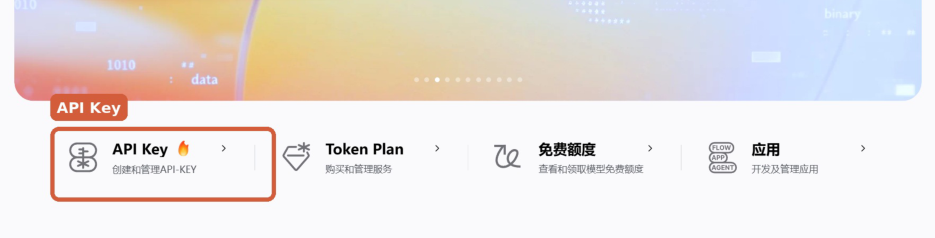
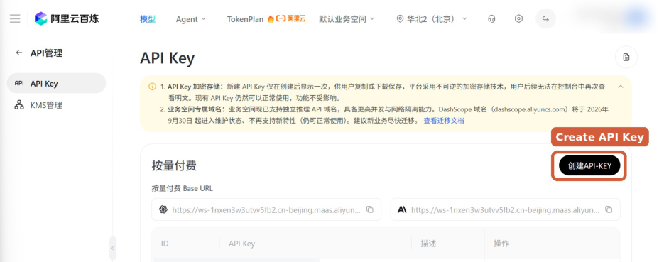
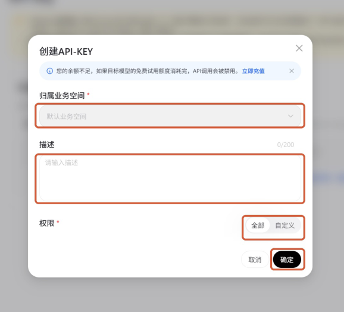
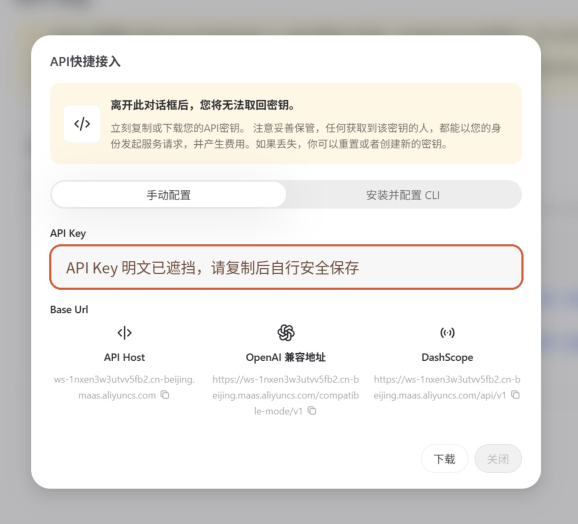

自己部署时怎么申请 API Key
公网体验版已经接好了 AI，不用填。下面的步骤是给在自己电脑上装 TADA 的人看的：用阿里云百炼（千问）申请一把 API Key，粘贴到引导页或设置里。
打开百炼密钥管理 →-
登录阿里云百炼
用自己的阿里云账号登录，在首页找到「API Key」入口，打开密钥管理页。

-
确认地域，创建密钥
先选择项目使用的地域，再点击「创建 API-KEY」。截图用的是北京。密钥、接入地址和模型须与项目所用地域相符。

-
填写创建信息
业务空间可先用「默认业务空间」，描述可填「TADA 本机测试」。教程使用「全部」权限。团队有访问范围要求时，按要求选「自定义」，再点「确定」。

-
复制密钥，回到 TADA
关闭窗口前点「复制」或「下载」，把密钥存在自己的密码管理器里。回到引导页粘贴并验证。密钥像密码一样保管，别发到群里或放进截图。
